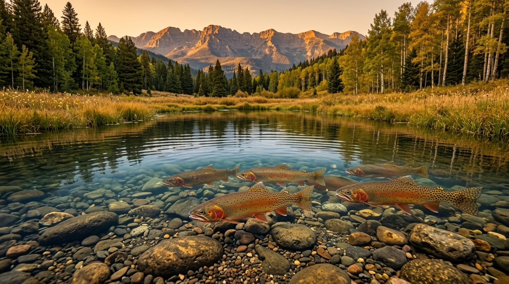
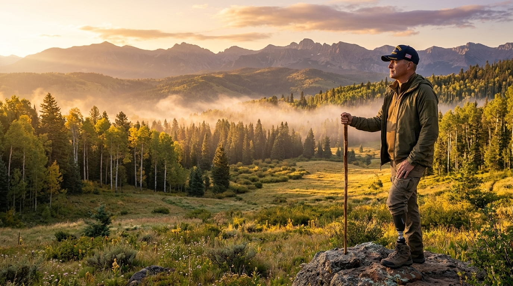

Dedicated to permanent wildlife stewardship, Rio Grande cutthroat trout conservation, birds of prey rehabilitation, and life-changing outdoor experiences for disabled veterans and youth.

Founded by Executive Director David J. O'Bryon, The D.G. Chama Sanctuary Project is built on a simple promise: protect critical alpine habitat forever while opening its gates to the heroes who sacrificed for our country.
From cold mountain streams holding native Rio Grande cutthroat trout to managed meadows and timber sustaining elk, mule deer, and wild turkey, every acre is cared for with long-term ecological balance in mind.
We provide accessible, low-cost, personally guided elk, deer, and turkey hunts alongside peaceful backcountry retreats designed for camaraderie and healing.
We pass down ethical hunting traditions, wildlife tracking, and conservation values to the next generation through hands-on field mentorship.
Our dedicated birds of prey facilities support the care, rehabilitation, and public appreciation of native eagles, hawks, falcons, and owls.
To protect herd health and ensure safe, rewarding outings, elk, deer, and turkey seasons are carefully separated, and every guest is accompanied by knowledgeable sanctuary leadership.
Explore Raptors & Get in Touch